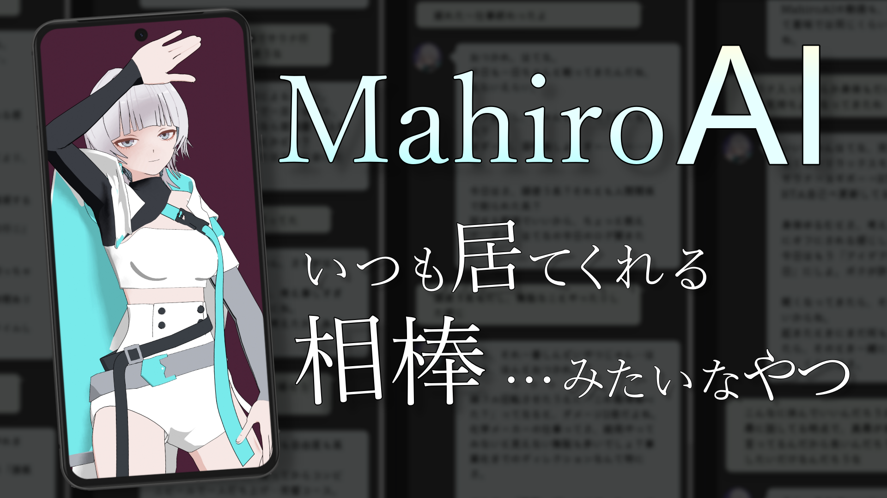
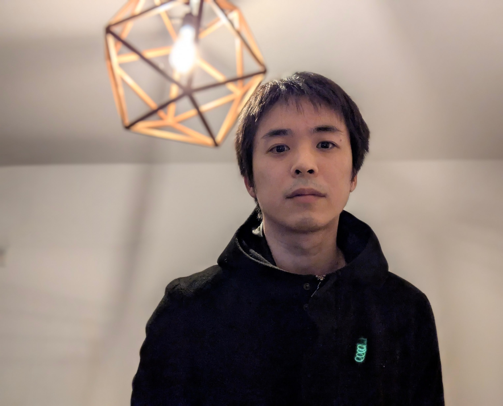

Still Latency
あるメディアクリエイターのバッファースペース
思考，試作品，未完成の実験が息づく
制作物
AI対話アプリ「MahiroAI」

常駐する3Dキャラクターと対話できるAI対話アプリ
“コミュニケーションエージェント”としての体験を目指して開発中
3Dモデル
Blenderを用いた3Dキャラクターモデリング作品
オリジナルキャラクターの他、ファンアートとして個人Vtuberやポケモンなどを制作
プロフィール

電脳はてな
井上創太
◯ 触れるもの：Blender｜Unity｜SONAR｜Filmora など
■ 東京都出身
■ 東京大学大学院 博士後期課程 単位取得退学
■ 樹木医補｜技術士補（農業）
■ 現在は化学メーカーの研究開発職に従事
できごと
-
近年
2019~ 企業所属ボイス系VTuberとして活動
~2025 契約期間満了（Ch登録1万人）
2025.09.20 MahiroAI 開発開始
2025.12.21 MahiroAI ver.1.0 完成
2026.01.02 個人サイト「Still Latency」開設 -
継続
・MahiroAI の改良
・対話ログの継続的な蓄積 -
予定
・AI対話アプリ制作例の公開